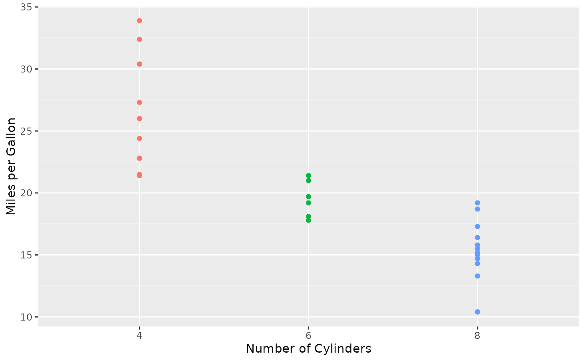

stat_test_text.RdFor a strip plot or scatterplot produced using the package ggplot2
(e.g., with geom_point),
add text indicating the results of a hypothesis test comparing locations
betweeen groups, where the groups are defined based on the unique \(x\)-values.
stat_test_text(mapping = NULL, data = NULL,
geom = ifelse(text.box, "label", "text"), position = "identity",
na.rm = FALSE, show.legend = NA, inherit.aes = TRUE,
y.pos = NULL, y.expand.factor = 0.35, test = "parametric",
paired = FALSE, test.arg.list = list(), two.lines = TRUE,
p.value.digits = 3, p.value.digit.type = "round",
location.digits = 1, location.digit.type = "round",
nsmall = ifelse(location.digit.type == "round", location.digits, 0),
text.box = FALSE, alpha = 1, angle = 0, color = "black",
family = "", fontface = "plain", hjust = 0.5,
label.padding = ggplot2::unit(0.25, "lines"),
label.r = ggplot2::unit(0.15, "lines"), label.size = 0.25,
lineheight = 1.2, size = 4, vjust = 0.5, ...)See the help file for geom_text.
Character string indicating which geom to use to display the text.
Setting geom="text" will use geom_text to display the text, and
setting geom="label" will use geom_label to display the text.
The default value is geom="text" unless the user sets text.box=TRUE.
Numeric scalar indicating the \(y\)-position of the text (i.e., the value of the
argument y that will be used in the call to geom_text or
geom_label). The default value is y.pos=NULL, in which
case y.pos is set to the maximum value of all \(y\)-values plus
a proportion of the range of all \(y\)-values, where the proportion is
determined by the argument y.expand.factor (see below).
For the case when y.pos=NULL, a numeric scalar indicating the proportion
by which the range of all \(y\)-values should be multiplied by before adding
this value to the maximum value of all \(y\)-values in order to compute the
value of the argument y.pos (see above).
The default value is y.expand.factor=0.35.
A character string indicating whether to use a standard parametric test
(test="parametric", the default) or nonparametric test
(test="nonparametric") to compare groups.
For the case of two groups, a logical scalar indicating whether the data
should be considered to be paired. The default value is paired=FALSE.
NOTE: if the argument test.arg.list is supplied and it includes a
component named paired, the value of that component
is overriden by the value of the argument paired.
An optional list of arguments to pass to the function used to test for
group differences in location. The default value is an empty list:
test.arg.list=list(). In particular, when there are two groups,
ci.and.test="parametric", and ci.arg.list does not contain
a component specifying the value for var.equal, this argument is
updated to include the component var.equal=TRUE, which is not
the default behavior of t.test.
NOTE: If test.arg.list contains a component named "paired",
the value of that component is set to the value of the argument paired
(see above).
For the case of one or two groups, a logical scalar indicating whether the
associated confidence interval should be be displayed on a second line
instead of on the same line as the p-value. The default is two.lines=TRUE.
An integer indicating the number of digits to use for displaying the
p-value. When p.value.digit.type="round" (see below)
the argument p.value.digits indicates the number of digits to round to,
and when p.value.digit.type="signif" the argument p.value.digits
indicates the number of significant digits to display.
The default value is p.value.digits=3.
A character string indicating whether the p.value.digits argument (see above)
refers to significant digits (p.value.digit.type="signif"), or how many decimal
places to round to (p.value.digit.type="round", the default).
For the case of one or two groups, an integer indicating the number of digits
to use for displaying the associated confidence interval.
When location.digit.type="round" (see below)
the argument location.digits indicates the number of digits to round to,
and when location.digit.type="signif" the argument location.digits
indicates the number of significant digits to display.
The default value is location.digits=1.
For the case of one or two groups, a character string indicating
whether the location.digits argument (see above)
refers to significant digits
(location.digit.type="signif"), or how many decimal
places to round to (location.digit.type="round"; the default).
For the case of one or two groups, an integer passed to the function
format indicating the the minimum number of digits to use
to the right of the decimal point for the associated confidence interval.
The default value is nsmall=digits when digit.type="round" and
nsmall=0 when digit.type="signif". When nsmall is greater than 0,
the two confidence limits will have the same number of digits to the
right of the decimal point (including, possibly, trailing zeros).
To omit trailing zeros, set nsmall=0.
Logical scalar indicating whether to surround the text with a text box (i.e.,
whether to use geom_label instead of
geom_text). This argument can be overridden by simply
specifying the argument geom.
See the help file for geom_text and
the vignette Aesthetic specifications at
https://cran.r-project.org/package=ggplot2/vignettes/ggplot2-specs.html.
See the help file for geom_text.
Other arguments passed on to layer.
The table below shows which hypothesis tests are performed based on the number of groups
and the values of the arguments test and paired.
| Function | ||||
| # Groups | test | paired | Name | Called |
| 1 | "parametric" | One-Sample t-test | t.test | |
"nonparametric" | Wilcoxon Signed Rank Test | wilcox.test | ||
| 2 | "parametric" | FALSE | Two-Sample t-test | t.test |
TRUE | Paired t-test | t.test | ||
"nonparametric" | FALSE | Wilcoxon Rank Sum Test | wilcox.test | |
TRUE | Wilcoxon Signed Rank Test | wilcox.test | ||
| on Paired Differences | ||||
| \(\ge\) 3 | "parametric" | Analysis of Variance | aov | |
summary.aov | ||||
"nonparametric" | Kruskal-Wallis Test | kruskal.test |
See the help file for geom_text for details about how
geom_text and geom_label work.
See the vignette Extending ggplot2 at https://cran.r-project.org/package=ggplot2/vignettes/extending-ggplot2.html for information on how to create a new stat.
Wickham, H. (2016). ggplot2: Elegant Graphics for Data Analysis (Use R!). Second Edition. Springer.
The function stat_test_text is called by the function geom_stripchart.
# First, load and attach the ggplot2 package.
#--------------------------------------------
library(ggplot2)
#==========
# Example 1:
# Using the built-in data frame mtcars,
# plot miles per gallon vs. number of cylinders
# using different colors for each level of the number of cylinders.
#------------------------------------------------------------------
p <- ggplot(mtcars, aes(x = factor(cyl), y = mpg, color = factor(cyl))) +
theme(legend.position = "none")
p + geom_point(show.legend = FALSE) +
labs(x = "Number of Cylinders", y = "Miles per Gallon")

# Now add text indicating the sample size and
# mean and standard deviation for each level of cylinder, and
# test for the difference in means between groups.
#------------------------------------------------------------
dev.new()
p + geom_point() +
stat_n_text() + stat_mean_sd_text() +
stat_test_text() +
labs(x = "Number of Cylinders", y = "Miles per Gallon")
#==========
# Example 2:
# Repeat Example 1, but show text indicating the median and IQR,
# and use the nonparametric test.
#---------------------------------------------------------------
dev.new()
p + geom_point() +
stat_n_text() + stat_median_iqr_text() +
stat_test_text(test = "nonparametric") +
labs(x = "Number of Cylinders", y = "Miles per Gallon")
#==========
# Example 3:
# Repeat Example 1, but use only the groups with
# 4 and 8 cylinders.
#-----------------------------------------------
p <- ggplot(subset(mtcars, cyl %in% c(4, 8)),
aes(x = factor(cyl), y = mpg, color = cyl)) +
theme(legend.position = "none")
dev.new()
p + geom_point() +
stat_n_text() + stat_mean_sd_text() +
stat_test_text() +
labs(x = "Number of Cylinders", y = "Miles per Gallon")
#==========
# Example 4:
# Repeat Example 3, but
# 1) facet by transmission type,
# 2) make the text smaller,
# 3) put the text for the test results in a text box
# and make them blue.
#---------------------------------------------------
dev.new()
p + geom_point() +
stat_n_text(size = 3) + stat_mean_sd_text(size = 3) +
stat_test_text(size = 3, text.box = TRUE, color = "blue") +
facet_wrap(~ am, labeller = label_both) +
labs(x = "Number of Cylinders", y = "Miles per Gallon")
#==========
# Clean up
#---------
graphics.off()
rm(p)